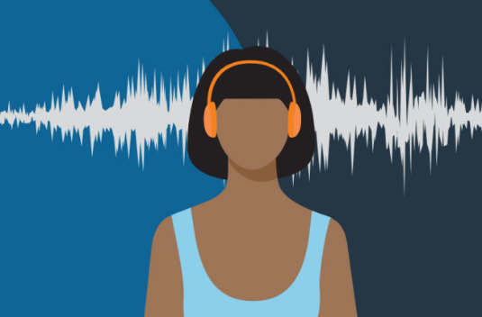

How to Calm Your Anxiety at Night
It’s bedtime, and not a creature is stirring…except for your racing mind, that is. Why is it that even after a relatively anxiety-free day, our minds sometimes go into overdrive when our heads hit the pillow? Psychologist Susan Albers, PsyD, talks about how to calm anxiety at night and even prevent it from happening in the first place.
Why do you get anxiety at night?
When you lie down at night to unwind, your brain turns to all of the worries it didn’t have time for during the day. Frequently, this anxiety revolves around worries you can’t solve in the moment. “All the things that have been put on the back burner come to the forefront of your head,” Dr. Albers says. “Without competing demands for your attention, these worries often get louder and more pronounced.” Chronic daytime stress puts your body into overdrive and taxes your hormones and adrenal system, which are directly linked to sleep — so sleep troubles may be a red flag telling you to address stress during your waking hours. Nighttime anxiety can trigger a vicious cycle: A bad night’s sleep leads to exhaustion the next day and disrupts your body’s natural rhythms. “This makes you more vulnerable to anxiety during the day that can bleed into the night,” Dr. Albers says. And so the cycle repeats.
Settle into your routines
When it comes to sleep, routine is your best friend. Eating at the same time every day helps regulate your circadian rhythms. Eating breakfast signals that it’s time for your body to wake up. Regular daytime exercise releases endorphins and decreases levels of cortisol, the hormone behind stress. Going to bed at the same time every night teaches your body to get sleepy around the same time. But if you want to lessen nighttime anxiety, it’s still important to implement a specific nighttime routine. “You can’t expect to go from 100 mph and then suddenly stop,” Dr. Albers says. Instead, institute a 30-minute transition between bedtime and the rest of your day. Try quiet, tech-free activities that reduce your cortisol levels and help ease you into sleep, such as: Taking a bath. Reading a book. Journaling. Doing yoga stretches.
Try these pre-sleep snacks
If you’re worried you’ll be too worried to fall asleep, head off nighttime anxiety with these all-natural tricks: Drink tart cherry juice or eat a bowl of tart cherries. Studies show that tart cherry consumption can help you sleep for up to 85 minutes longer because they’re a source of melatonin, a sleep aid that reduces inflammation in the body. Make a mug of chamomile tea. This ancient herbal tea has been clinically shown to help reduce anxiety and promote sleep. Pop a Brazil nut or two. These big, buttery tree nuts are one of the world’s best sources of selenium, which can help your thyroid run smoothly and thus aid in sleep. Just two Brazil nuts have been shown to be as helpful as a selenium supplement. Try not to consume caffeine late in the day, whether in coffee or elsewhere. “Be mindful of what you’re consuming,” Dr. Albers says, “because too much caffeine can exacerbate existing anxiety.”
Put your phone to bed
Just say no to doomscrolling before bed — the practice of taking in a barrage of bad news online. “Give your phone a bedtime before your own,” Dr. Albers advises. And if anxiety keeps you awake or wakes you up, resist the temptation to break this rule and start using your phone. Your phone’s blue light signals your brain to turn back on, ultimately making it even harder to get to sleep. “This is a No. 1 no-no for helping you fall back to sleep,” Dr. Albers warns.
If you can’t sleep…
If you wake up with anxiety in the middle of the night, these practical tips can help you stop tossing and turning: Write it down. Keep a journal next to your bed where you can jot down your worries. “This helps you to detach and let it go,” Dr. Albers says. Try an app. Apps such as Calm, Headspace®, or the Cleveland Clinic’s Mindful Moments share relaxing sleep stories to help soothe your mind. Listen to soothing music. Studies show that relaxing tunes can calm your autonomic nervous system, which leads to slower breathing, reduced heart rate, and lower blood pressure, all of which help you sleep. Get up but stay calm. If you simply can’t snooze, it’s OK to get out of bed — just be smart about what you do next. “Choose an activity that is relaxing rather than a task or activity that turns on your brain full-throttle,” Dr. Albers says. She recommends routine, low-engagement tasks such as packing your lunch and folding the laundry. And try to avoid self-medication with food, alcohol, or sleep aids, which can provide short-term help but won’t get to the root of your issues.
Meditate on it
“Your breathing patterns are a signal,” Dr. Albers says. “When your breathing slows down, it sends a message to your brain and body that it’s time to go to sleep.” She suggests this 4-7-8 breathing technique from Dr. Andrew Weil: Gently part your lips. Exhale, making a “whoosh” sound as you do. Silently inhale as you press your lips together for a count of four. For a count of seven, hold your breath. Exhale for a count of eight, and make the whooshing sound again. Repeat this four times as you first start; work up to eight repetitions. Finally, if nothing seems to help your nighttime anxiety, check in with a physician or therapist, who can help get to the bottom of underlying medical conditions or anxiety disorders. As you (try to) fall asleep, remember: Mindfulness is key. Rather than worrying about the future, focus on what’s within your control right now — like getting to sleep.